Projects
Ordered by engineering depth, from flight-qualified hardware and precision machining to mechatronics and product design. Select any project for the full process.
CuRIOS Detector Interfaces
Kinematic mounting and thermal isolation integrating a Sony IMX455 detector into a 16U CubeSat, qualified for 12G launch loads and thermal vacuum.
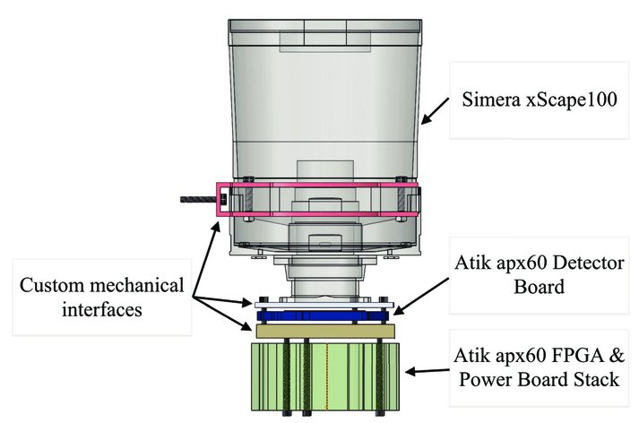
PrimeDrive, In-Transit Concierge
Industry-sponsored capstone. I led the mechanical architecture of an in-car concierge unit that completes luxury hotel check-in during the ride.
Deployable Light-Shield Baffles
A zero-backlash, spring-driven deployment mechanism validated by nonlinear Abaqus FEA and space-qualified through thermal-vacuum cycling.
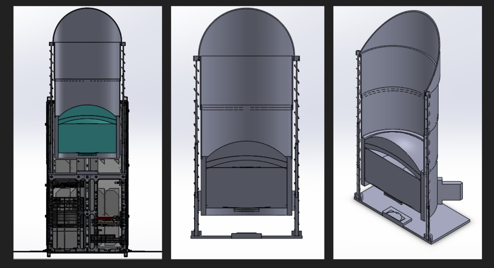
Alef eVTOL Prototype
Carbon-fiber manufacturing by resin infusion and suspension validation for a flying-car flight prototype at Alef Aeronautics.
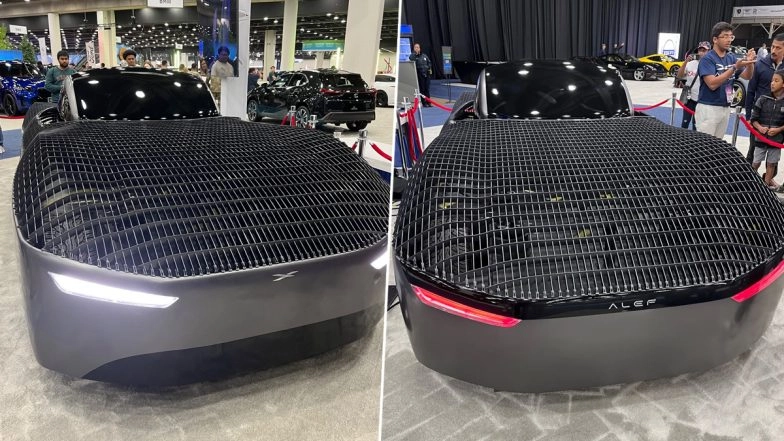
Vansh, the Lineage Watch Box
A CNC-machined aluminum and ABS watch box carrying a Suryavanshi mandala. Multi-material toolpathing, precision fits, and a sandblasted marble finish.
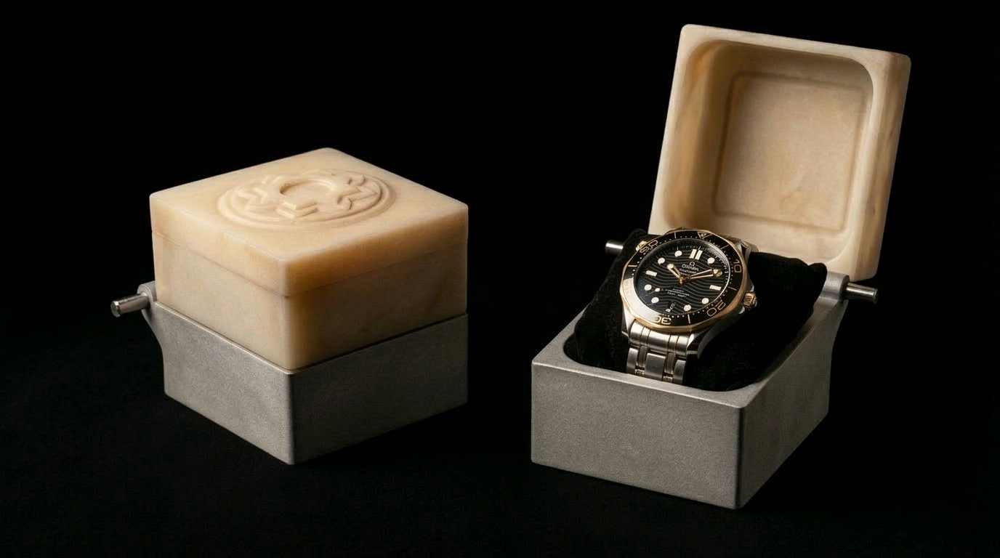
Pneumatic Lasso & Breakaway Shell
A ruggedized pneumatic trigger mechanism and an energy-dispersal breakaway shell for non-lethal defense, tuned through dynamic simulation.
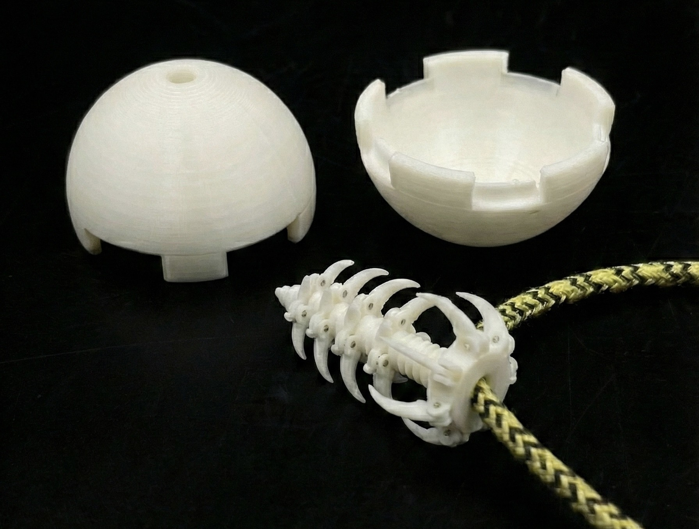
Pneumatic Venus Flytrap
A hyperelastic Ecoflex actuator with autonomous proximity capture, modeled in Abaqus with a Neo-Hookean material law.
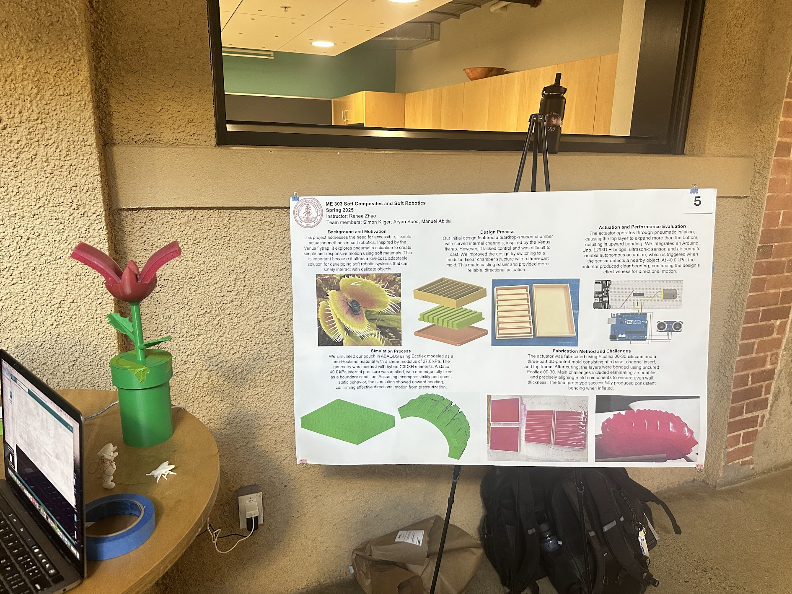
Multimaterial DIW Printhead
A CFD-optimized direct-ink-writing nozzle for viscoelastic material voxelation that reduced switching waste by 45 percent.
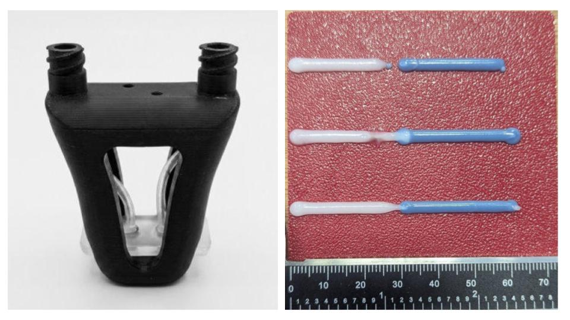
PRICK, Kyphoplasty Interface
Electro-stimulation embedded in vertebral bone cement for post-operative pain relief, with a full FDA Class III regulatory roadmap.
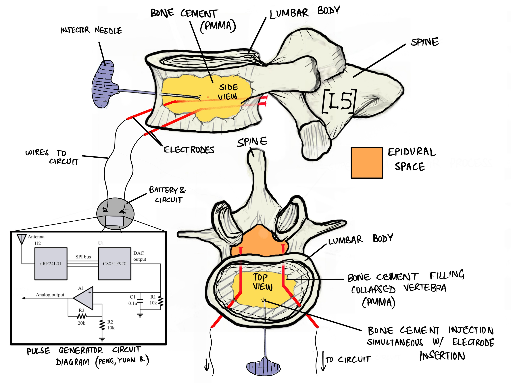
Autonomous Ball Launcher
A dual-flywheel launcher with an automatic feeder, cascaded PID control, and current-based jam detection on an ESP32.
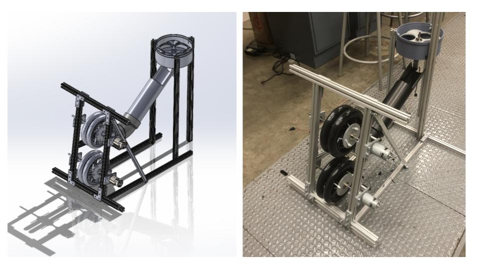
The Narwhal Bottle Opener
A continuous organic form chosen to demand true 3-axis machining, finished with a scallop toolpath that mimics skin texture.
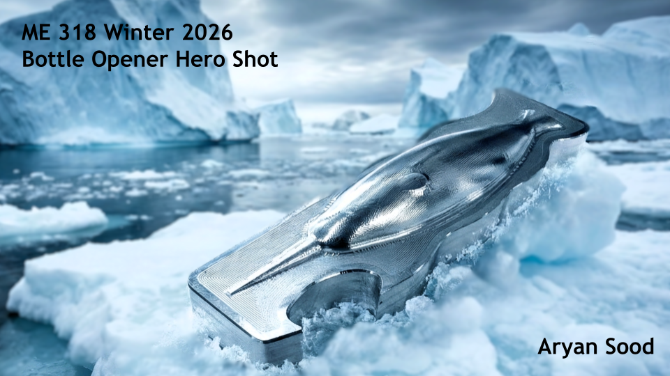
Time and Tide Watch Display
A luxury display sculpture in sand-cast bronze and 5-axis-milled brass, with an ash-wood boat and custom threaded interfaces.
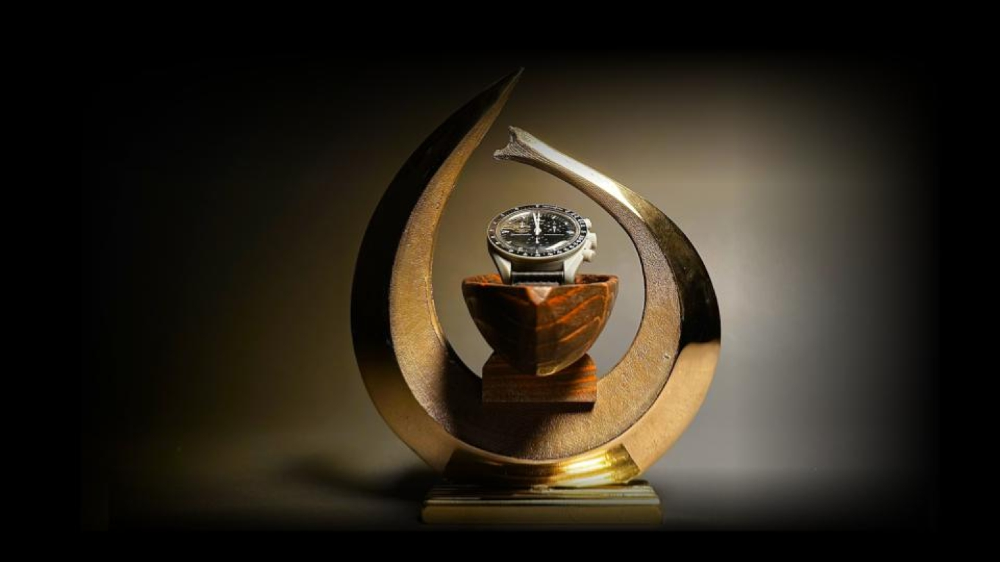
Submariner-Homage Diver
A hand-assembled dive watch on a Seiko NH35A movement, regulated to within 5 seconds per day with dive-grade sealing.
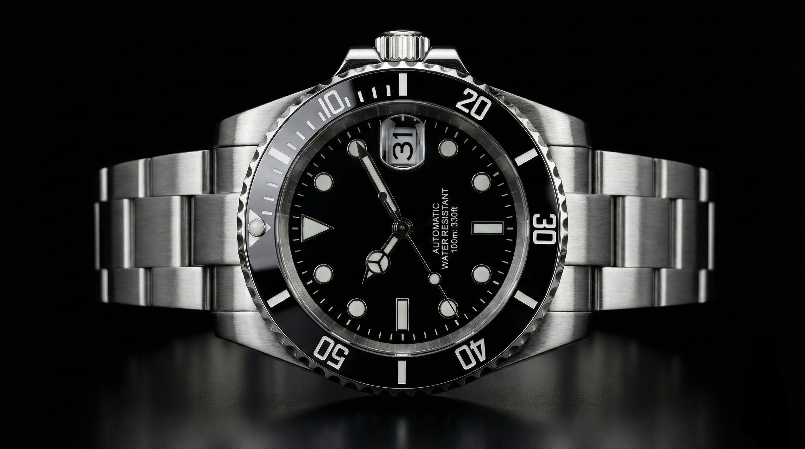
Algorithmic Guitar Stand
A Fusion 360 generative-design structure optimized for a 40 lbf load case using measured PLA material data.
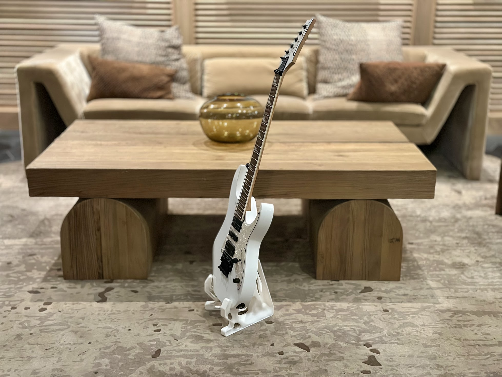
Predictive Wind Modeling
Wind-tunnel calibration of a vertical-axis anemometer, with a regression model reaching an R-squared above 0.98.
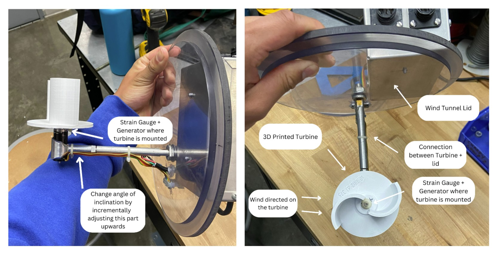
Flicc, Smart Switch Actuator
A non-intrusive retrofit that mechanically toggles existing wall switches, with ESP32 and MQTT for voice control.
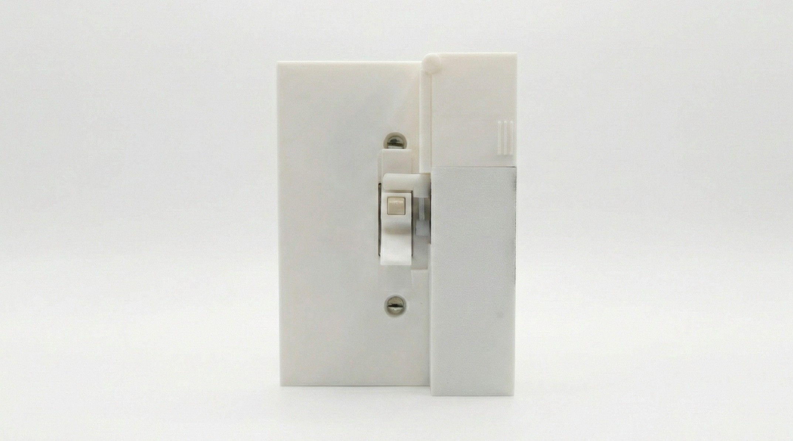